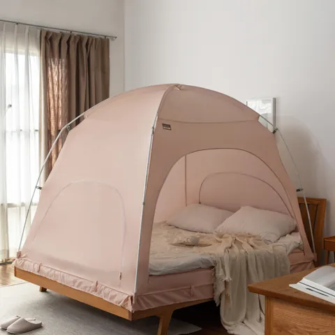
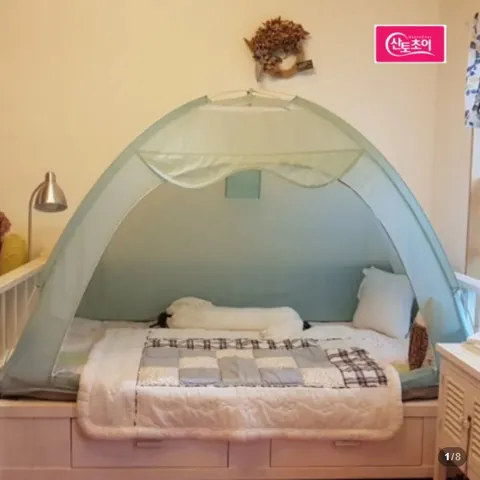
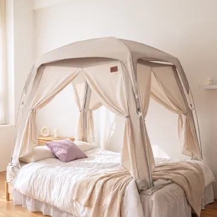
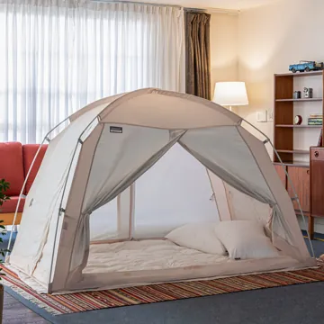
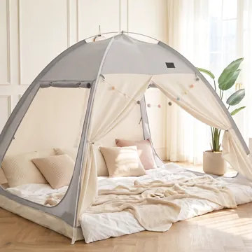

이 포스팅은 네이버 쇼핑 커넥트 활동의 일환으로, 판매 발생 시 수수료를 제공받습니다.
난방텐트 추천 순위 BEST 5
난방텐트 추천 BEST 5입니다. 467개를 훑어서 5개만 남겼어요. 다섯 제품의 검증 리뷰 총 72,279건 중에서 도움이 되는 리뷰만 골라 정리했습니다.
2026년 10월 30일 · 난방텐트 467개 중 5개 · 다섯 제품 검증 리뷰 72,279건 · 글 업데이트 2026년 11월 8일
결론 난방텐트 추천 1위는 검증 구매 리뷰 38,890건인 따수미 패브릭 난방텐트예요. 난방텐트 467개를 훑어 리뷰가 많은 순으로 5개만 남겼어요. 골라 읽은 리뷰 약 70건 중에 사이즈 얘기가 7건쯤 됐어요. 퀸 침대에 퀸이 안 맞았다는 리뷰, 라지킹 침대엔 킹도 작다는 리뷰가 있었고, 슈퍼싱글 위에 올리면 매트리스 아래로 내려간다는 리뷰도 있었습니다.
VIDEO
상황별 난방텐트 추천 처음 사서 실패하기 싫으면 → 1위 따수미 패브릭 (6.5만원) 2만원대로 시작하려면 → 2위 산토초이 (2.5만원) 천장이 높은 사각형 → 3위 로티캠프 프리미엄 (6.0만원) 큰 침대에 오래 쓰려면 → 4위 따수미 시그니처 (9.3만원) 따수미보다 싸게 → 5위 로티캠프 원터치 (4.9만원) 난방텐트 추천 순위 BEST 5 비교표 순위는 검증 구매 리뷰 수 하나로만 매겼어요. 가격·리뷰 수는 2026년 10월 영상 만든 시점 값이에요. 순위 제품 가격 검증 리뷰 별점 설치 1위 따수미 패브릭 난방텐트 64,900원 38,890건 ★4.75 폴대 조립 2위 산토초이 원터치 난방텐트 24,800원 18,256건 ★4.72 원터치 3위 로티캠프 프리미엄 사각 난방텐트 59,900원 5,796건 ★4.74 폴대 조립 4위 따수미 시그니처 난방텐트 92,900원 5,676건 ★4.76 폴대 조립 5위 로티캠프 원터치 난방텐트 49,900원 3,661건 ★4.79 원터치
난방텐트 제품별 장단점 (실제 구매 리뷰)

1위 따수미 패브릭 난방텐트 64,900원 · 검증 리뷰 38,890건 · 별점 4.75
크기 210×120×135cm · 무게 약 3kg · 사이즈 6가지
리뷰에서 좋았던 점 나일론처럼 바스락거리지 않아 방에 어울린다는 리뷰가 있습니다 난방을 세게 틀지 않아도 침대 안이 포근하다는 리뷰가 있습니다 다섯 번째 구입이고 시댁에도 사 드렸다는 리뷰가 있습니다 아쉬운 점 아이보리가 베이지가 아니라 완전 흰색이었다는 리뷰가 있습니다 이런 분께: 처음 사는 분 · 침대 크기가 애매한 분 · 인테리어를 신경 쓰는 분
네이버에서 지금 가격 보기 
2위 산토초이 원터치 난방텐트 24,800원 · 검증 리뷰 18,256건 · 별점 4.72
크기 120×200×135cm · 폴대 화이바글라스 · 설치 원터치
리뷰에서 좋았던 점 값이 싸서 냄새를 걱정했는데 전혀 없었다는 리뷰가 있습니다 문이 아래로 완전히 열려서 드나들기 편하다는 리뷰가 있습니다 7년 전에 따뜻했던 기억으로 다시 샀다는 리뷰가 있습니다 아쉬운 점 고양이가 올라가 발톱에 구멍이 났다는 리뷰가 있습니다 이런 분께: 가격이 먼저인 분 · 처음 써 보는 분 · 1~2인 침대
네이버에서 지금 가격 보기 
3위 로티캠프 프리미엄 사각 난방텐트 59,900원 · 검증 리뷰 5,796건 · 별점 4.74
크기 210×120×145cm · 수납 61×12×12cm · 세탁 울코스
리뷰에서 좋았던 점 주문한 다음 날 바로 왔다는 리뷰가 있습니다 면 같은 재질이라 포근하다는 리뷰가 있습니다 원터치보다 설치는 까다롭지만 더 견고하다는 리뷰가 있습니다 아쉬운 점 폴대 연결부가 플라스틱이고 분리하다 기스가 났다는 리뷰가 있습니다 이런 분께: 머리 위가 넉넉한 걸 원하는 분 · 사방을 열어 두고 쓸 분 · 아이 방
네이버에서 지금 가격 보기 
4위 따수미 시그니처 난방텐트 92,900원 · 검증 리뷰 5,676건 · 별점 4.76
크기 210×120×135cm · 무게 약 3kg · 문 4면
리뷰에서 좋았던 점 10년 넘게 써도 폴대가 부러진 적 없다는 리뷰가 있습니다 울코스로 빨고 10분 안에 설치했다는 리뷰가 있습니다 킹 사이즈가 킹 침대에 빈틈없이 맞았다는 리뷰가 있습니다 아쉬운 점 퀸 침대에 퀸이 안 맞아 킹으로 바꿨다는 리뷰가 있습니다 이런 분께: 킹 침대 · 아이와 같이 자는 집 · 오래 쓸 분
네이버에서 지금 가격 보기 
5위 로티캠프 원터치 난방텐트 49,900원 · 검증 리뷰 3,661건 · 별점 4.79
설치 원터치 · 세탁 울코스 · 폴대 화이바글라스
리뷰에서 좋았던 점 따수미와 소재가 비슷한데 1만원쯤 싸다는 리뷰가 있습니다 원터치라 설치가 쉽고 폴대가 튼튼하다는 리뷰가 있습니다 보일러를 끄면 싸늘하던 아이 방이 따뜻해졌다는 리뷰가 있습니다 아쉬운 점 먼지와 새 제품 냄새가 많아 세탁하고 썼다는 리뷰가 있습니다 이런 분께: 따수미가 비싸게 느껴지는 분 · 설치가 귀찮은 분 · 아이 방
네이버에서 지금 가격 보기 난방텐트 살 때 알아 둘 것
알아둘 건 받자마자 빨고 쓰세요 받자마자 빨고 쓰는 게 좋아요. 먼지와 새 제품 냄새 때문에 세탁하고 썼다는 리뷰가 있었고, 하루 환기하고 썼다는 리뷰도 있었어요. 그리고 문을 다 닫기보다 한쪽은 열어 두고 쓴다는 리뷰도 여럿 있었습니다.
난방텐트 자주 묻는 질문 난방텐트 추천 순위는 어떻게 되나요? 검증 구매 리뷰 수로 매기면 1위 따수미 패브릭 난방텐트, 2위 산토초이 원터치 난방텐트, 3위 로티캠프 프리미엄 사각 난방텐트, 4위 따수미 시그니처 난방텐트, 5위 로티캠프 원터치 난방텐트 순이에요. 1위는 리뷰 38,890건에 별점 4.75였어요. 난방텐트 살 때 주의할 점은요? 사시기 전에 세 가지만 보고 가세요. 첫째, 침대 치수를 재세요. 침대 이름이 아니라 매트리스 가로, 세로를 재고 텐트 치수와 비교해야 해요. 둘째, 조립할 자리를 확인하세요. 침대보다 넓은 자리가 필요했다는 리뷰가 있었어요. 셋째, 받으면 한 번 빨고 쓰세요. 냄새와 먼지 때문에 세탁했다는 리뷰가 있었습니다. 따수미 난방텐트 후기는 어때요? 1위 따수미 패브릭 난방텐트는 검증 리뷰 38,890건, 별점 4.75(영상 만든 시점 64,900원)이에요. 나일론처럼 바스락거리지 않아 방에 어울린다는 리뷰, 난방을 세게 틀지 않아도 침대 안이 포근하다는 리뷰가 있었어요. 다만 아이보리가 베이지가 아니라 완전 흰색이었다는 리뷰도 있었어요. 이 순위는 어떻게 골랐나 검증된 구매 리뷰가 많은 순으로 봅니다 이번엔 별점 4.7 이상으로 골랐습니다 파손·불량·환불 후기가 반복되면 뺍니다 난방텐트 467개를 훑어 5개만 남겼어요 장단점은 판매 페이지의 실제 구매 리뷰에서 옮겼어요. 직접 써 본 사용기가 아니에요